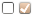
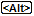

CCSM Sonstiges
Artikel für fortgeschrittene Anwender
Dieser Artikel erfordert mehr Erfahrung im Umgang mit Linux und ist daher nur für fortgeschrittene Benutzer gedacht.
Dieser Artikel wurde für die folgenden Ubuntu-Versionen getestet:
Ubuntu 16.04 Xenial Xerus
Zum Verständnis dieses Artikels sind folgende Seiten hilfreich:
Der CompizConfig Einstellungs-Manager (abgeleitet aus der Paketbezeichnung nachfolgend mit "CCSM" abgekürzt) bietet umfangreiche Möglichkeiten, das Verhalten auf dem Bildschirm, das Aussehen diverser Komponenten sowie die Eingriffe durch die Tastatur und die Maus einzustellen.
Übersicht¶
Dieser Abschnitt behandelt die im Startbildschirm vom CCSM zusammengefassten Einstellungen für die Optionsgruppen:
Letztere Gruppe ist erst ab Natty Narwhal vorhanden und ist als "experimentell" anzusehen.
Sonstiges¶
Nachfolgend ist eine Übersicht aller Beschreibungen aufgeführt, die sich mit dem Thema "Sonstiges" befassen. Durch Anklicken des jeweiligen Icons bzw. des Titels gelangt man zur jeweiligen Detailbeschreibung.
| Auf dem Bildschirm zeichnen | Bildschirmfoto | Fenster-Vorschaubilder | |||
Die folgenden Optionen sind erst verfügbar nach der Installation des Paketes[1] (nicht mehr verfügbar und obsolet in Xenial):
compiz-fusion-plugins-extra (universe)
 mit apturl
mit apturl
Paketliste zum Kopieren:
sudo apt-get install compiz-fusion-plugins-extra
sudo aptitude install compiz-fusion-plugins-extra
| Ladebildschirm | Leistungstest | ||||
Bildverarbeitung¶
Nachfolgend ist eine Übersicht aller Beschreibungen aufgeführt, die sich mit dem Thema "Bildverarbeitung" befassen. Durch Anklicken des jeweiligen Icons bzw. des Titels gelangt man zur jeweiligen Detailbeschreibung.
| JPEG | PNG | SVG | Text | ||||
Ohne Kategorie¶
Nachfolgend ist eine Übersicht der Beschreibungen aufgeführt, die unter dem Thema "Ohne Kategorie" zusammen gefasst sind. Diese Optionen sind erst ab Natty Narwhal vorhanden. Durch Anklicken des jeweiligen Icons bzw. des Titels gelangt man zur jeweiligen Detailbeschreibung.
| Debug Spewer | Unity MT Grab Handles | ||||
Legende in den Tabellen¶
Die Symbole in den Erläuterungen haben folgende Bedeutung:
 = Auswahl/Wechsel erfolgt durch Anklicken
 = Einstellung der Tasten erfolgt in einer Auswahlbox
 = Auswahl wird in einem "DropDown" vorgegeben
= Auswahl wird in einem "DropDown" vorgegeben = Einstellung erfolgt über einen "Schieber"
= Einstellung erfolgt über einen "Schieber" = steht für die Eingabe eines zulässigen Textes
= steht für die Eingabe eines zulässigen Textes = diese Beschreibung ist erst ab Natty Narwhal verfügbar
= diese Beschreibung ist erst ab Natty Narwhal verfügbar
Hervorgehobene Werte bei den Einstellungen verweisen auf die bei der Installation vorgegebene Standardeinstellung.
Beschreibungen der Optionen¶
Hinweis:
Es können zwischen den Ubuntuversionen in den einzelnen Einstellmasken hinsichtlich der Reihenfolge der Positionen Unterschiede auftreten. Auf diesen Umstand wird nicht näher eingegangen.
Auf dem Bildschirm zeichnen¶
Nach Aktivierung dieser Option kann man direkt auf dem Monitor mit dem Mauszeiger zeichnen. Dieses ist nicht an eine Arbeitsfläche gebunden, diese Darstellung liegt also über der Anzeige. Zum Zeichnen muss man die genannte Maus-Tastenkombinationen gedrückt halten!
Der Umfang der Funktionen wurde ab Natty Narwhal erweitert und ist nachfolgend mit gekennzeichnet.
| Funktion | Typ | Beschreibung |
| "Freies Zeichnen" | In einer Auswahlbox kann man eine Maus-Tastenkombination einstellen, mit der man zeichnen kann. Standardeinstellung =
Windows +
Alt +  | |
| "Linie Zeichnen" | In einer Auswahlbox kann man eine Maus-Tastenkombination einstellen, mit der man eine Linie zeichnen kann. Standardeinstellung =
Windows +
Alt +  | |
| "Rechteck Zeichnen" | In einer Auswahlbox kann man eine Tastenkombination einstellen, mit der man ein Rechteck zeichnen kann. Standardeinstellung =
⇧ +
Windows +
Alt + | |
| "Ellipse Zeichnen" | In einer Auswahlbox kann man eine Maus-Tastenkombination einstellen, mit der man eine Ellipse zeichnen kann. Standardeinstellung =
⇧ +
Windows +
Alt + | |
| "Radiergummi" | In einer Auswahlbox kann man eine Maus-Tastenkombination einstellen, mit der man Teile der Zeichnung löschen kann. Standardeinstellung =
Windows +
Alt +  | |
| "(Bildschirm) Leeren mit Taste" | In einer Auswahlbox kann man eine Tastenkombination einstellen, mit der man die Zeichnung vom Bildschirm löschen kann. Standardeinstellung = Windows + Alt + K | |
| "(Bildschirm) Leeren mit Maus" | In einer Auswahlbox kann man eine Mausaktivität einstellen, mit der man die Zeichnung vom Bildschirm löschen kann. Standardeinstellung = "Deaktiviert" | |
| "Form aus Zentrum" | Hiermit wird bestimmt, dass die ...?? | |
| "Füllfarbe" | | In einer Farbauswahlbox kann man eine Farbe einstellen. Dieses ist gleichzeitig die Farbe für den Zeichenstift. Standardwert = #FF0000 |
| "Kommentar Rahmenfarbe" | | In einer Farbauswahlbox kann man die Farbe für die Umrandung vom "Rechteck" und "Ellipse" einstellen. Standardwert = #00FF00 |
| "Radiergummibreite" | | Hiermit wird die Breite des Radiergummi eingestellt. Standardwert = 20,0000 |
| "Linienstärke" | | Hiermit stellt man die Breite des Stiftes ein. Standardwert = 3,0000 |
Bildschirmfoto¶
Man kann mit dieser Option alternativ zum Standardverfahren zum Bildschirmfoto aus dem Menü
"Anwendungen -> Zubehör -> Bildschirmfoto aufnehmen"
Aufnahmen vom Bildschirm erstellen.
Hinweise zur Benutzung¶
Aufgerufen wird mit der nachfolgend bestimmten Maus-Tastenkombination. Ausgehend von der Standardeinstellung wird dabei mit gedrückter
Windows -Taste und durch Aufziehen des Bereiches mit der ein Bildschirmfoto initiiert. Je nach Eintragung im Feld "Anwendung starten" ergeben sich unterschiedliche Arbeitsweisen:
keine Eintragung
wählbarer Bildausschnitt
"/gnome-screenshot"
Vollbild
"/gnome-screenshot --interactive"
GUI "Bildschirmfoto" aufrufen
Einstellungen Bildschirmfoto¶
| Funktion | Typ | Beschreibung |
| "Einschalten" | In einer Auswahlbox kann man eine Maus-Tastenkombination einstellen, mit der man ein Programm zur Erstellung eines Bildschirmfotos aufrufen und gleichzeitig einen Bildausschnitt bestimmen kann. Standardeinstellung =
Windows + . | |
| "Verzeichnis" | | In einer Zeile kann man ein Verzeichnis vorgeben, in das die Bildschirmfotos abgelegt werden. Diese muss immer den gesamten Pfad ausgehend vom Wurzelverzeichnis enthalten (z.B.: /home/<Benutzername>/Bilder). Ohne Eintrag werden die Bilder auf dem Desktop abgelegt. |
| "Anwendung starten" | | In einer Zeile kann man eine eigene Anwendung bestimmen, die für das Bildschirmfoto verwendet werden soll. Der Eintrag muss immer den vollen Pfad, die Bezeichnung und erforderliche Ergänzungen enthalten. Siehe auch die allgemeinen Hinweise oben. |
Fenster-Vorschaubilder¶
Mit diesen Einstellungen kann man Vorschaubilder von Fenstern an die Panel-Umschaltleiste binden. Diese Option funktioniert nicht mit Unity.
| Funktion | Typ | Beschreibung |
| "Vorschaubildgröße" | | Hiermit wird eine konstante Breite aller Vorschaubilder eingestellt. Der Standardwert = 200 Pixel |
| "Anzeigeverzögerung" | | Hiermit wird die Verzögerung eingestellt, mit der das Vorschaubild nach Berührung des Panels mit dem Mauszeiger erscheint. Die Standardeinstellung = 100 msek |
| "Rahmengröße" | | Hiermit wird die Rahmenbreite um die Vorschaubilder bestimmt. Der Standardwert = 16 Pixel |
| "Rahmenfarbe" | | Hiermit wird in einer Farbauswahlbox eine Farbe für den Hintergrund um das Vorschaubild und ein Glühen des Rahmens vorgegeben. Die Standardeinstellung ist #000000 |
| "Ein-/Ausblendzeit" | | Hiermit wird die Ein- bzw. Ausblendzeit eingestellt. Der Standardwert = 0,5000 sek |
| "Fensterartiger Hintergrund" | Hiermit kann man die Vorgabe zur Rahmenfarbe (siehe oben) zugunsten einer normalen, verkleinerten Fensteranzeige wieder ausschalten | |
| "Mipmaps benutzen" | Hiermit wird für eine Verbesserung der (verkleinerten) Darstellung auf die Verwendung von Mipmap-Texturen zurückgegriffen. | |
| "Taskleiste zeigt.." | "..nur Fenster der aktuellen Arbeitsfläche". Diese Eingrenzungauf die gerade sichtbare Arbeitsfläche kann hiermit erzwungen werden. | |
| "..Vorschaubilder immer im Vordergrund". Hiermit wird erreicht, dass die Vorschaubilder auch über den im Nahbereich zum Panel liegenden Fenstern voll angezeigt werden | ||
| "Zeige Fenstertitel an" | Hiermit werden die Fenstertitel in lesbarer Form mit den Vorschaubildern angezeigt. | |
| "Fette Schrift verwenden" | Hiermit kann man die Schrift für die Fenstertitel der Vorschaubilder auf fett einstellen. | |
| "Schriftgrad" | | Hiermit wird für die Anzeige der Fenstertitel in den Vorschaubildern die Schriftgröße eingestellt. Standardwert = 12 |
| "Schriftfarbe" | | Hiermit wird in einer Farbauswahlbox die Schriftfarbe für die Anzeige der Fenstertitel in den Vorschaubildern ausgewählt. Standardwert = #000000 |
Ladebildschirm¶
Hiermit kann man sich anzeigen lassen, dass Compiz eingeschaltet ist - es wird nach dem Anmelden eine einfache Animation über den sich aufbauenden Bildschirm gelegt.
Die Einstellungen erlauben u.a
eine Tastenkombination zum Testen auszuwählen
eine Bilddatei (Hintergrund / Animation) zu bestimmen
das Aussehen zu konfigurieren
Die Bilddateien liegen in der Regel unter /usr/share/compiz/...
Leistungstest¶
Mit diesem Leistungstest (benchmark) kann man eine grobe Abschätzung über die eingesetzte Hardware erhalten.
| Funktion | Typ | Beschreibung |
| "Aufrufen" | In einer Auswahlbox kann man eine Tastenkombination bestimmen, mit der der Leistungstest ein- bzw. ausgeschaltet wird. Standardeinstellung ist Windows + F12 . | |
| "Begrenzung deaktivieren" | ||
| | Ab Natty Narwhal kann man in einem DropDown Einstellungen zu den FPS (Frames Per Second) vornehmen. Einstellungen sind: "Begrenzer ausgeschaltet", "Standardbegrenzer", "V-Sync benutzen" | |
| "Bildschirmausgabe.." | "..Aktivieren" Hiermit wird die Anzeige auf dem Bildschirm ein- bzw. ausgeschaltet. Achtung!Das Abschalten kann zu unbeabsichtigter Leistungsminderung führen, weil man ggf. einen aktivierten Leistungstest nicht bemerkt! | |
| | "..X-Position" Hiermit wird die horizontale Null-Stellung der Anzeige (ab linken Bildschirmrand) vorgegeben. Standardwert = 0 | |
| | "..Y-Position" Hiermit wird die vertikale Null-Stellung (ab oberen Bildschirmrand) vorgegeben. Standardwert = 0 | |
| "Ausgabe in Terminal" | Es konnten noch keine relevanten Einstellungen verifiziert werden! |
Beschreibung Bildverarbeitung¶
In dieser Optionsgruppe kann man die Plugins nur aus- bzw. abwählen. Diese Plugins sind primär für das Laden der jeweiligen Bildformate zuständig. Bis auf die Option "JPEG" haben diese Plugins keine zusätzlichen Einstellungen.
Bildformat JPEG¶
| Funktion | Typ | Beschreibung |
| "Kompressionsqualität" | | Hiermit kann man den Grad der Kompression einstellen, die beim Speichern von JPEG-Bildern verwendet werden soll. Standardwert = 80 % |
Bildformat Text¶
Mit diesem Plugin werden Texte gerendert, damit diese als Bild dargestellt werden können.
Debug Spewer¶
Hiermit wird ab Natty Narwhal ein Plugin bereitgestellt, dass anzeigt, wenn in den Compiz-Plugins irgend welche Fehler festgestellt werden. Diese Plugin wird z.Zt. als experimentel eingeordnet!
| Funktion | Typ | Beschreibung |
| "Anzeige Taste(n)" | (im Original mit Kotz-Taste bezeichnet) Hiermit kann man sich in einer Auswahlbox eine Tastenkombination für die Anzeige des momentanen Status von Compiz einstellen. Standardeinstellung = "Deaktiviert" | |
| "Zeige fatale Fehler" | Mit Aktivierung dieser Option werden fatale Fehler in den Compiz-Plugins sofort angezeigt. |
Unity MT Grab Handles¶
Hiermit wird ab Natty Narwhal ein Plugin bereitgestellt, dass es ermöglicht, auf einem Touch-Screen Aktionen mit Fenstern auszuführen. Nach einer Aktivierung werden für das aktive Fenster Bewegungspunkte angezeigt, mit denen man diese Fenster
insgesamt bewegen kann (entspricht Alt +
)Fenster von den Rändern/Ecken her
verkleinern kann
vergrößern kann
Hinweis:
In der Maske für "Unity MT Grab Handles" sind die Bezeichnungen für die Tasteneinstellungen unter Natty Narwhal) einheitlich mit "Toggle Handles" bezeichnet - deshalb muss man die folgenden Bezeichnungen sinngemäß zuordnen. Dieses Plugin wird als "experimentel" eingestuft!
| Funktion | Typ | Beschreibung |
| "Toggle Handles" | "Einstellung Marker". Hiermit kann man in einer Auswahlbox eine Tastenkombination für die Anzeige der Marker setzen. Diese Option wird zum Arbeiten mit den Fingerpunkten eingesetzt. Standardeinstellung = "Deaktiviert" | |
| "Show Handles" | "Aufrufen der Marker". Hiermit kann man in einer Auswahlbox eine Tastenkombination zur Aktivierung der Marker setzen. Standardeinstellung = "Deaktiviert" | |
| "Hide Handles" | "Ausblenden der Marker". Hiermit kann man in einer Auswahlbox eine Tastenkombination zur Deaktivierung der Marker setzen. Standardeinstellung = "Deaktiviert" | |
| "Fade Duration" | | "Dauer Überblendung": Hiermit kann man die Ein- bzw. Ausblendzeit einstellen.. Standardwert = 150 - negative Werte führen zu einer Unterdrückung der Anzeige. |
Links¶
intern¶
 Plugins - eine Übersicht zu den Compiz-Plugins
Plugins - eine Übersicht zu den Compiz-PluginsCCSM Allgemein - Einstellungen unter "Allgemein"
CCSM Barrierefreiheit - Einstellungen für Behinderte optimieren
CCSM Arbeitsfläche - Einstellungen für die Arbeitsflächen und deren Erscheinungsbild
CCSM Effekte - Effekte rund um die Fenster
CCSM Werkzeuge - Werkzeuge und Hilfsmittel, alles was man braucht
CCSM Fensterverwaltung - Fensterverwaltung, wie man die Fenstern aufleben lässt
Compiz - ein Composite- und Fenstermanager
Compiz CCSM - das Werkzeug, um Compiz-Plugins einzustellen und nutzbar zu machen
CCSM Benutzung - wie die Plugins mit dem CCSM bearbeitet werden
 - Wiki, Planet und Forum zu Compiz
- Wiki, Planet und Forum zu Compiz- Erstellt mit Inyoka
-
 2004 – 2017 ubuntuusers.de • Einige Rechte vorbehalten
2004 – 2017 ubuntuusers.de • Einige Rechte vorbehalten
Lizenz • Kontakt • Datenschutz • Impressum • Serverstatus -
Serverhousing gespendet von